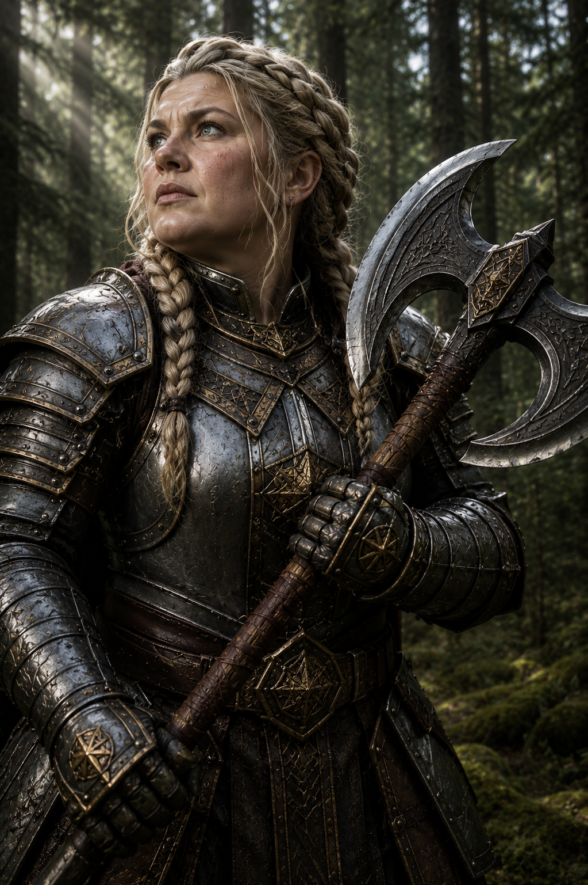
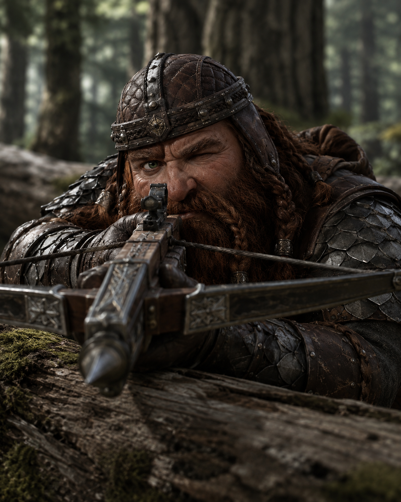
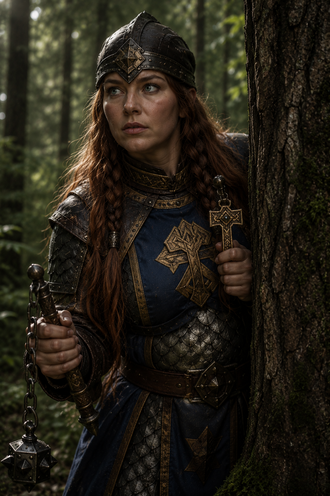
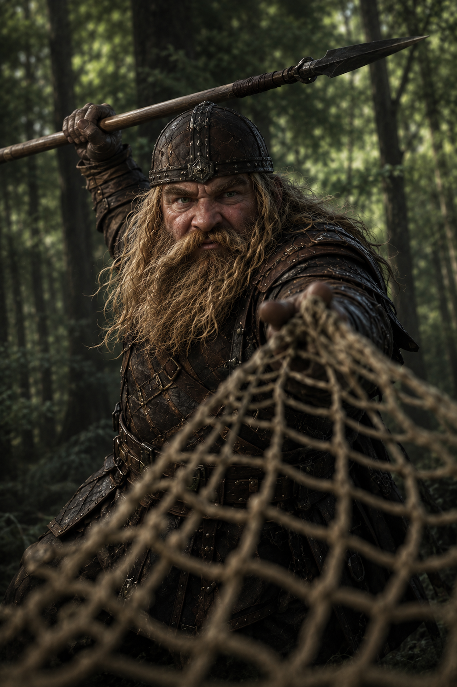
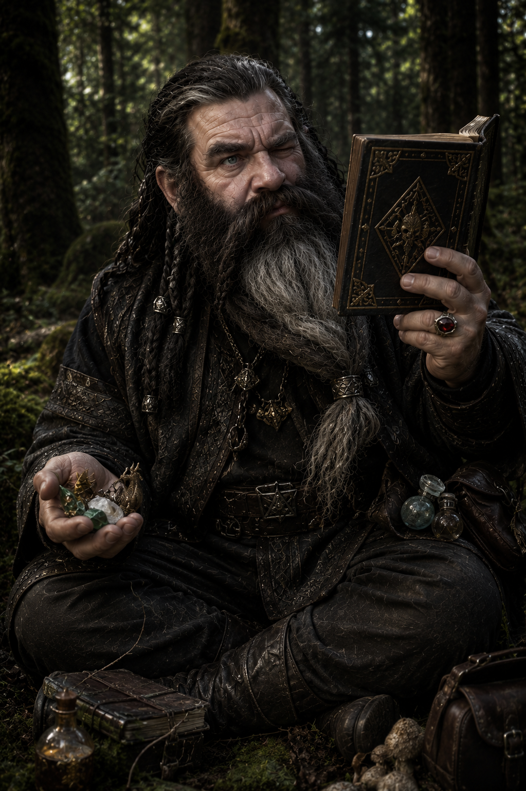
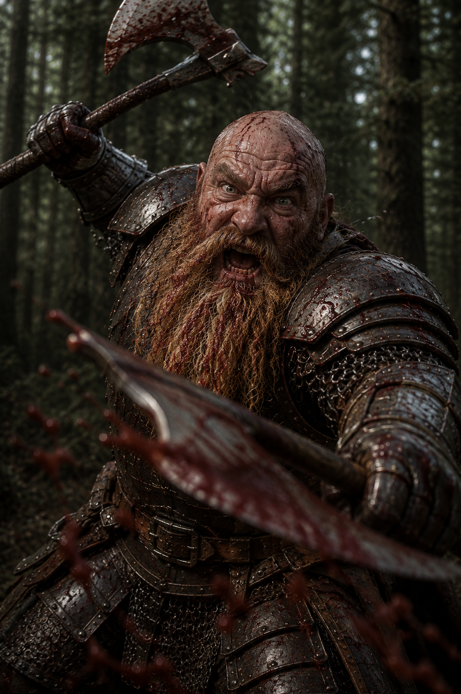
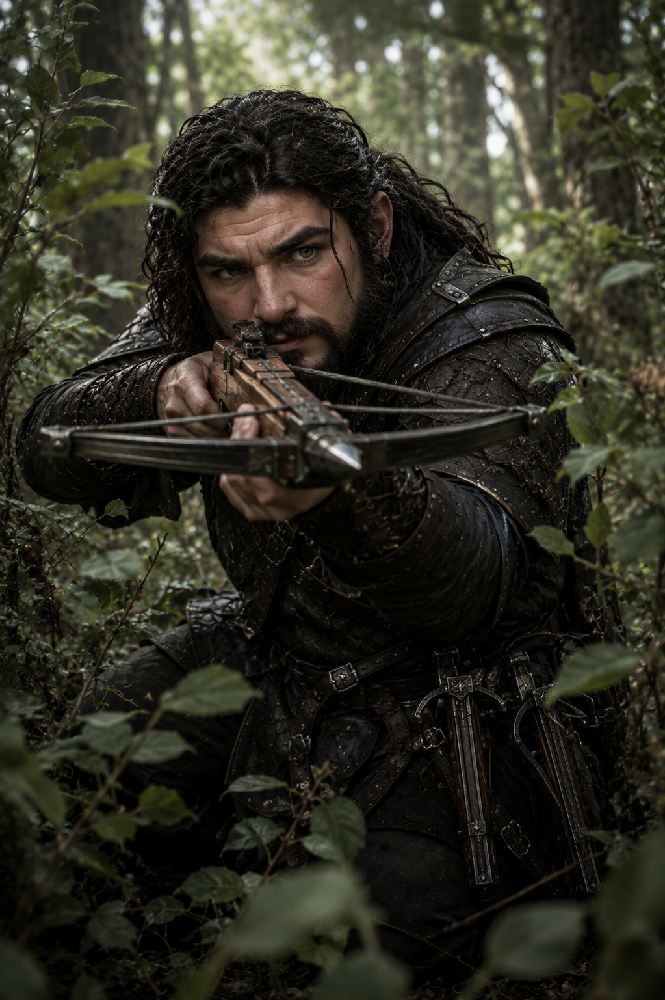
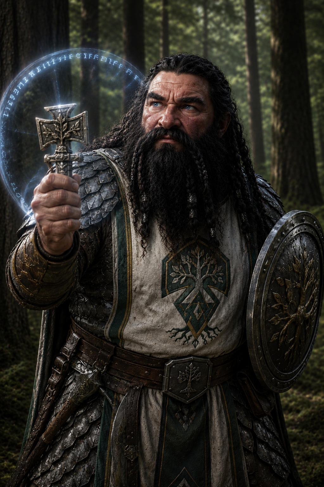
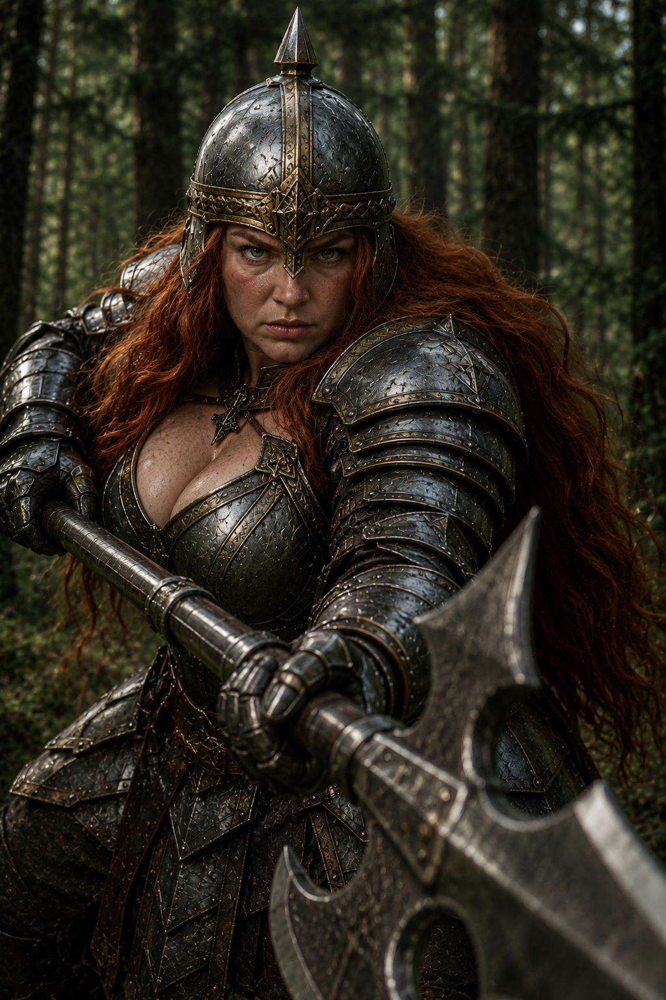

Notable NPCs of Earthfast

Horg mac Khormin
Ironlord of Earthfast
Horg mac Khormin, grandson of the famed Ironlord Torg, rules the halls of Earthfast in the Year of the Seven Calamities, 1502 DR, with a stern resolve shaped by the long shadows of his family’s legacy. Broad even for a shield dwarf and marked by a thick braid of iron-gray hair bound in bronze rings, Horg carries himself less like a king upon a throne and more like a veteran commander still prepared to march beside his warriors. The old scars crossing his bald crown and left cheek were earned battling hobgoblin raiders in the Earthspur foothills during his youth, and he wears them openly as proof that an ironlord’s duty is first to defend. Unlike his grandfather, whose fierce pride and suspicion often clouded his judgment, Horg is known for a quieter temperament and a deliberate patience that many mistake for coldness.
Under Horg’s leadership, Earthfast has become more disciplined and outward-looking than at any time since the Horde Wars. Though deeply respectful of dwarven tradition, he maintains cautious alliances with nearby human settlements in Impiltur and The Vast, caravans of the Great Dale, and even select elves of the Forest of Lethyr. Horg trains his shield-legions relentlessly in the ancient polearm tactics first brought to Earthfast by Princess Alusair Obarskyr over a century ago, and the walls of his great hall are lined with grim trophies taken from orcs, giants, and horrors dragged from the Underdark beneath the Earthspurs. Among his people he is called the Stone That Waits—a ruler slow to anger, impossible to move, and devastating once roused.

Thraina Goldbraid
Leader of Shadow Company
Thraina Goldbraid led Ironlord Horg mac Khormin’s elite shadow company with a calm ferocity that unsettled even veteran warriors. Beneath the gleam of her scarred plate armor and the weight of her twin-bladed battleaxe, she possessed a mind as sharp as forged steel, preferring patience and cunning over reckless bloodshed. Tales told of how her bright eyes could spot an ambush through the thickest fog, and how her intricate blonde braids, woven with tokens from fallen comrades, never stirred even in the chaos of battle. When goblin warbands crept through the stone valleys or rival clans plotted treachery beneath moonlit night, it was Thraina who answered the Ironlord’s summons, leading her handpicked dwarves deep behind enemy lines where few dared tread and fewer still returned unchanged.

Bromm Blackbolt
Marksman of Shadow Company
Bromm Blackbolt earned his place in the Shadow Company not through boasts or noble blood, but through impossible shots whispered about in dwarven strongholds from the Ironspines to the deep root halls beneath the mountains. Clad in dark scale armor and his weathered leather helm, Bromm could remain motionless for hours with one green eye narrowed down the groove of his heavy crossbow, waiting for the single perfect moment to strike. His ruddy face and scarred hands spoke of long campaigns in forgotten caverns. Though quiet among his comrades, Bromm possessed a dry wit and an unshakable loyalty to the Shadow Company, serving as both their deadliest marksman and their unseen guardian whenever missions carried them deep into hostile lands where a single bolt could decide whether the company returned home at all.

Sister Maelira Stonevein
Healer of Shadow Company
Sister Maelira Stonevein walked at the heart of the Shadow Company like the steady flame of a forge lantern in the deepest dark, her presence alone enough to calm fear in even the most battle-worn dwarves. Sworn to Moradin and entrusted by the Ironlord himself, she carried the sacred duty of shielding the company from both mortal wounds and darker omens that lingered in forgotten forests and ruined halls. Beneath her leather helm, strands of brown hair woven into careful braids framed sharp blue eyes that missed little, and though clad in layered scale armor and the heavy tunic of her god, she moved through the wilds with surprising silence for one bearing both flail and holy symbol. Her companions often said the enemies of the Shadow Company feared her prayers more than their axes, for Maelira could stand amid chaos with Moradin’s symbol raised high, calling down blessings that hardened dwarven resolve while her square-spiked flail crushed those foolish enough to test the Forge Father’s mercy.

Durgan Twice-Clobber
Tactician of Shadow Company
Durgan Twice-Clobber was the mind behind the Shadow Company’s most impossible victories, a hard-eyed dwarven strategist whose tangled blond hair and rough leather armor concealed a brilliance sharper than any forged spear. While other warriors sought glory through strength alone, Durgan studied the land itself as a weapon, turning dense forests, ravines, and hidden trails into deadly snares for enemies foolish enough to pursue his company. His green eyes constantly measured distance, movement, and weakness, and more than one invading warband had marched confidently into a valley only to find themselves tangled in nets, funneled into spear lines, or driven into ambushes by collapsing trees, falling boulders, and false trails crafted under his direction. Even in battle he fought with calculated precision, hurling nets to break formations while wielding his spear for the kill, and among the Shadow Company it was often said that Durgan won battles hours before the first dwarf ever drew blood.

Baern Hollowflame
Wizard of Shadow Company
Baern Hollowflame never truly belonged to one world or the other, a dwarf raised among humans who learned letters and arcane formulae before he ever learned the songs of the forge or the weight of a warhammer. Pale-skinned and sharp-eyed, with his long salt-and-pepper beard, Baern carried himself with a quiet distance that many dwarves first mistook for arrogance. Yet within the Shadow Company, none questioned his loyalty, for time and again his strange mind and mastery of the arcane had preserved the clan when steel alone would have failed. While others prepared ambushes or sharpened axes, Baern studied winds, terrain, and forgotten magic, weaving illusions to mislead pursuers, summoning wards that cloaked the company beneath shadows, or dispatching enemies with violent arcane chaos.

Hargrin Axefury
Enforcer of Shadow Company
Hargrin Axefury was the weapon the Shadow Company unleashed when diplomacy failed, stealth shattered, or an enemy simply needed to be broken beyond hope of resistance. Broad as an anvil and feared even among his own kin, Hargrin charged headlong into battle with twin axes spinning in blood-soaked arcs, his bald crown gleaming beneath layers of gore while his long yellow beard hung matted and dripping against battered armor scarred by a score of campaigns. In the grip of his infamous battlerage, his green eyes bulged with wild fury and frothing spittle flew from his lips as though some ancient storm spirit had possessed him, yet beneath the madness remained a warrior of terrifying instinct who could carve a path through enemy ranks exactly where the Shadow Company needed it most. His companions often joked that Moradin himself would hesitate before standing in his path. None doubted that when the company marched into the jaws of death, Hargrin would be the first dwarf into the maw.

Kelren Cloakedstone
Scout of Shadow Company
Kelren Cloakedstone was the unseen shadow moving ahead of the Shadow Company, a pale-faced scout whose youthful appearance and sly grin caused many enemies to underestimate him moments before a bolt found their throat from somewhere deep within the brush. Wrapped in black leather armor darkened with forest mud and pine ash, Kelren could vanish into undergrowth so completely that even seasoned rangers struggled to follow his trail, while the trio of light crossbows he carried allowed him to strike repeatedly before foes understood where death was coming from. Clever to the point of aggravation, he delighted in misleading pursuers with false tracks, carved symbols, and hidden snares, often returning to camp with a smirk after leading entire patrols into swamps or dead ravines simply for his own amusement. Yet beneath the mischief lived fierce devotion to the Shadow Company, for Kelren understood better than anyone that information won wars long before axes ever crossed, and many of the company’s victories began with his green eyes studying enemy camps silently from the safety of shadowed cover.

Dorrim Blackvein
Investigator of Shadow Company
Dorrim Blackvein walked beside the Shadow Company not as a mere priest, but as the keeper of truths others feared to uncover, a silent servant of Dumathoin whose black beard and dark eyes seemed carved from the hidden depths beneath the mountains themselves. Clad in worn scale armor marked with the secret signs of the Keeper of Secrets, Dorrim carried a small shield and sacred symbol through caverns, ruins, and forgotten tunnels where lesser dwarves dared not tread, weaving protective wards against hostile magic while searching for clues invisible to ordinary minds. It was said that no lock, lie, or buried secret could withstand his patient scrutiny, for Dumathoin granted him strange visions through whispers in stone, drifting shadows, and dreams heavy with omens. Though calm and soft-spoken among his companions, Dorrim possessed an unsettling ability to uncover betrayal long before it bloomed, and many within the Shadow Company believed their survival depended less on steel than on the investigator’s uncanny talent for choosing the one safe path through dangers no one else could yet see.

Brynda Stoutheart
Defender of the Shadow Company
Brynda Stoutheart stood at the center of every Shadow Company battle line like an iron gate driven into the earth by the gods themselves, unyielding beneath the weight of charging beasts, enemy shields, or storms of arrows. Towering for a dwarf and clad head to heel in scarred plate armor, with blazing red hair spilling from beneath her spiked helm, Brynda wielded her massive halberd not merely as a weapon but as the axis around which the company fought and survived. While scouts darted through the trees and berserkers hurled themselves into chaos, it was Brynda who held the ground that mattered, her green eyes cold and unwavering as she anchored every formation against impossible odds. Tales told of enemies breaking themselves against her defenses for hours without forcing her back a single step, and among the Shadow Company there existed a saying, whispered before desperate missions: “So long as Brynda stands, the company still lives.”